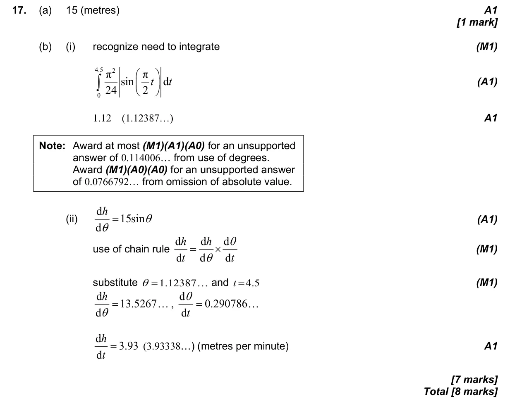

8 marks P1 TZ0 Calculator 5.9 Further differentiation: standard derivatives, chain, product and quotient rules, related rates5.5 Integration introduction, areas between curve and x-axis2.9 Further models: half-life, logarithmic, sinusoidal, logistic and piecewise Question Hide breakdown ab Markscheme 